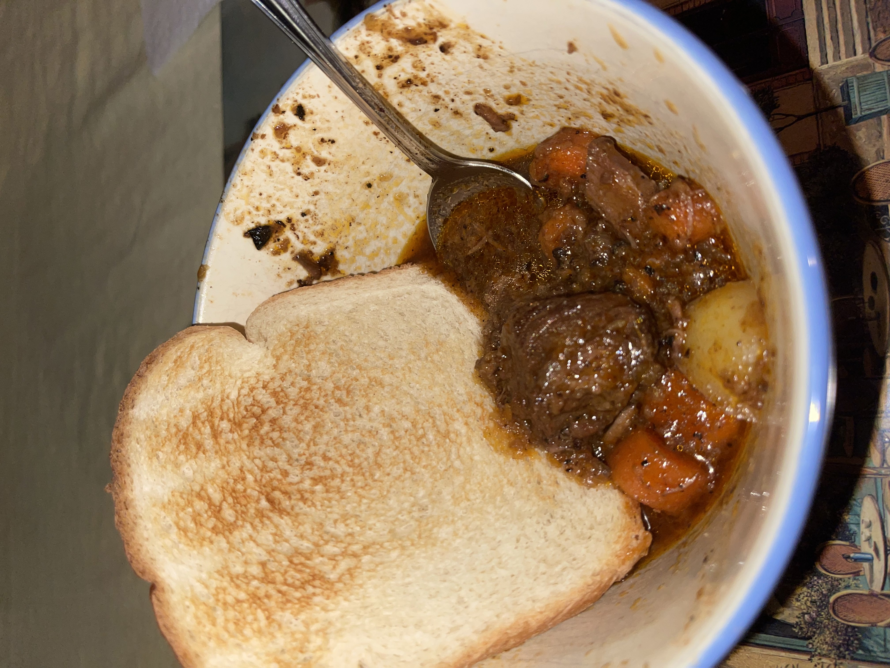

Beef Stew

Full of flavor, two pounds of tender beef, and loaded with vegetables, this recipe
is sure to be a hit for anyone who enjoys a good hearty meal. It is especially great for winter occasions.
Ingredients
- 2 Pounds Stew Beef, cut into 1 inch pieces
- 5 Teaspoons Oil
- 1 Cup Red Wine or Cooking Wine
- 4 Cups Beef Broth
- 2 Medium Onions
- 3 Medium Yellow Potatoes
- 4 Carrots
- 1/3 Cup FLour
- 2 Tbsp Garlic Powder
- 1/2 Tsp Ground Pepper